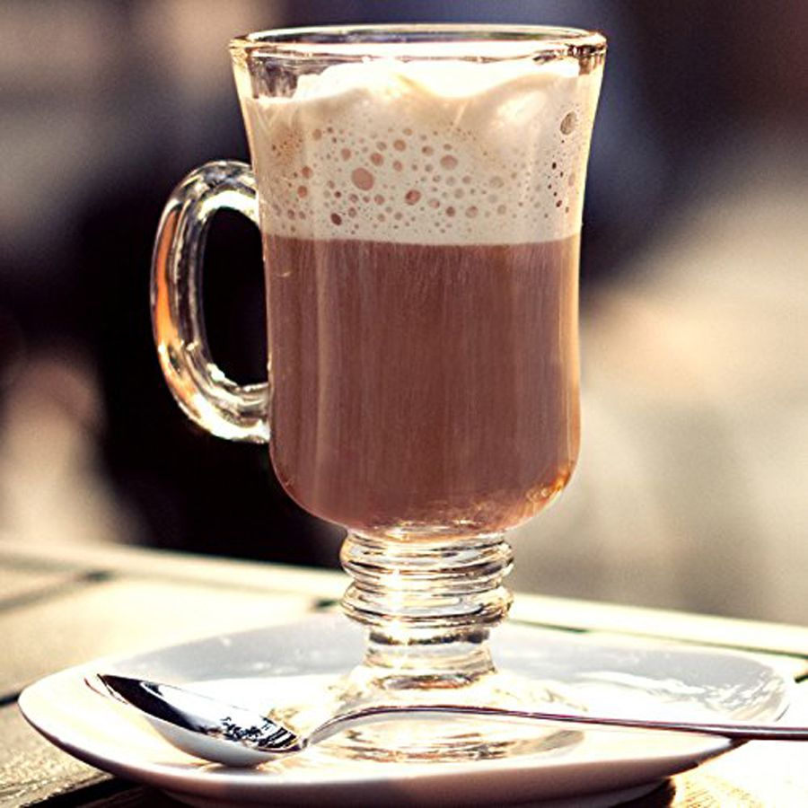
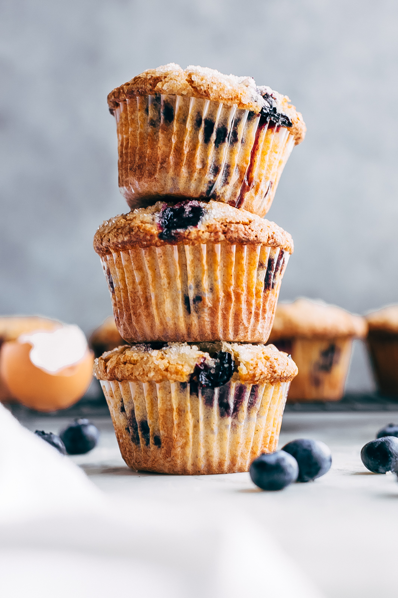

At Urban Coffee Hub we pride ourselves on our wide selection of delicious hot teats and more . Here are some of our customer favorites:
We specialize in specialty coffe shop offering premium coffee brewed from locally sourced beans. Check out some of our coffe options below:
|  |  |
 |
Urban Coffee HUB was founded in 2018 with a passion of offering premium coffee brewed from locally sourced beans,fresh pastries and cozy, modern atmosphere ideal for both working professionals and social gatherings .
Was born out of a passion for crafting the finest coffee in a cozy enviromnet.Here, youre not just drinking coffee yoy are creating experience .